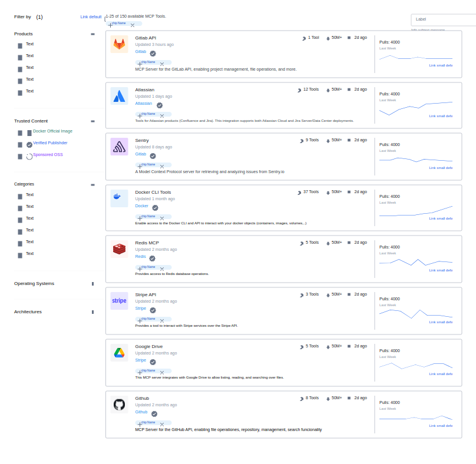
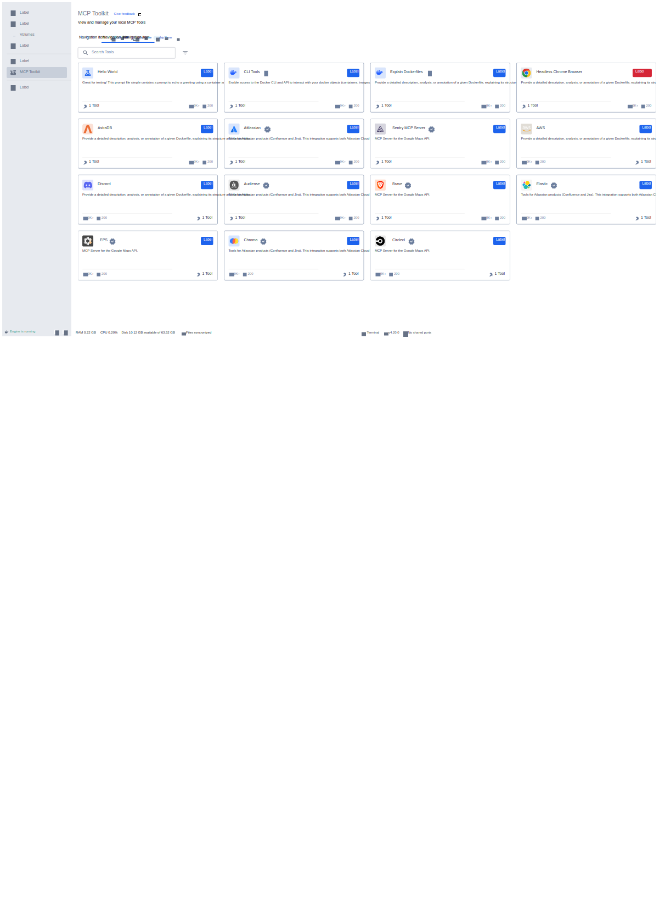
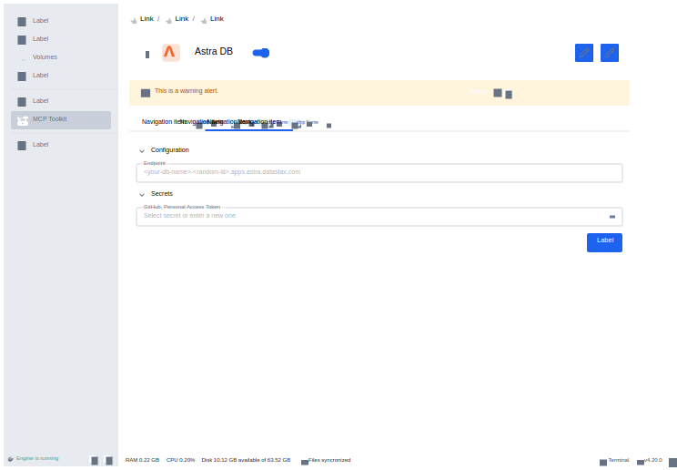

Making Docker a trusted hub for agent tooling: ~2.5× end-to-end conversion across two releases.
Docker · Design lead, net-new2024–2025
Priya · Marco · Anaagent eng · governance · discovery
Context
As agents exploded, developers needed a trusted, discoverable way to find and run MCP servers, and a safe way to connect them to clients like Cursor, Claude, and Gordon. The raw MCP ecosystem was fragmented and hard to set up.
Research
Before drawing anything, I audited the raw MCP ecosystem: servers were discovered by word of mouth, installed through hand-edited JSON config, and shipped with no provenance signal. Interviews and support threads surfaced the same three anxieties, mapped to personas: Priya (agent engineer) wanted tool breadth, Marco (platform lead) wanted to know who audited a server and where secrets went, and Ana (AI-curious developer) just wanted one that worked on the first try.
The funnel baseline told the same story: only 2.85% of users aware of MCP in Desktop ever completed a successful tool call. Discovery, setup, and credentials were each a drop-off, not one combined cliff.
Conceptualization
The concept: the catalog is the product. A curated hub where trust is visible (verified publisher, provenance, attestation), servers install like images, and client connection is a guided flow rather than config archaeology. Three flows were sketched and tested in sequence: discovery & filtering, add-server with client handoff, and a dedicated credential step that keeps secrets out of chat context.
The key trade-off was decided early: curation over openness. A smaller catalog with visible trust signals beats an unbounded list, with custom-URL servers kept as an escape hatch.
UX use cases
Each card defines the job, the design response, the objective, the measured outcome, and the trade-off made.
Curated Catalog in Desktop plus the Hub Marketplace, with filtering and verified sources.
“Discover an MCP server I can trust”
Objective
Cut search cost and trust anxiety so developers land on a server that fits the task.
Outcome
~13.1M catalog pulls and ~10.6M tool-call events; a long adoption tail (Playwright, Obsidian, GitHub, Fetch) rather than one default.
Trade-off
Curation adds review overhead and caps supply, traded against a sharper trust signal than the raw ecosystem.
Toolkit add-server flow with client-connection steps for Cursor, Claude and Gordon.
“Add a server and connect it to my client in a couple of clicks”
Objective
Turn discovery into a running tool call without config files or terminal archaeology.
Opinionated defaults shorten the flow but hide advanced configuration, exposed only as escape hatches.
Dedicated credential step: secrets entered once, stored by Desktop, never echoed into chat or logs.
“Configure credentials safely”
Objective
Make the safe path the easy path for tokens and API keys.
Outcome
Platform/governance users (Marco) could approve tooling without audit anxiety; part of the funnel lift above.
Trade-off
An extra prompt adds friction to every add, accepted to keep secrets out of agent context.
Custom MCP Server via URL in Integrations.
“Bring my own server by URL”
Objective
Keep the Toolkit useful for servers the catalog has not curated yet.
Outcome
Long-tail servers reachable without leaving the product; dynamic-mcps reached ~51.9K instances.
Trade-off
Openness weakens the curation promise, mitigated by surfacing provenance and permission state.
Measurement was wired into the funnel itself: awareness, add, activation, and successful tool call tracked per Desktop version in Sigma, so each release could be read against the 2.85% baseline rather than vibes.
Funnel figures from Sigma “AI Tools – MCP Metrics” by Desktop version; approximate, current to Jul 2026.
Reflection
Curation is ongoing work, not a launch feature. The catalog only holds trust because review keeps up with supply, and that operational cost is part of the design.
Design screens
Exported from the original Figma files with figx.

Trusted-content filtering and pull analytics in the Hub catalog (concept)

MCP Toolkit grid in Docker Desktop (shipped)

Server configuration with endpoint and stored secrets (shipped)